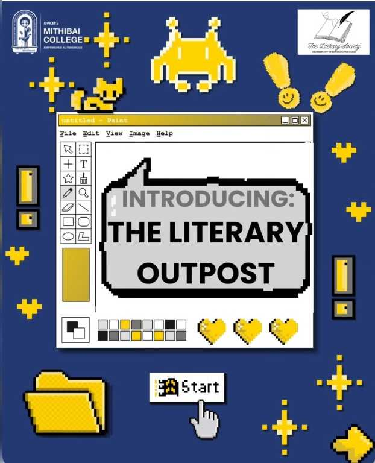
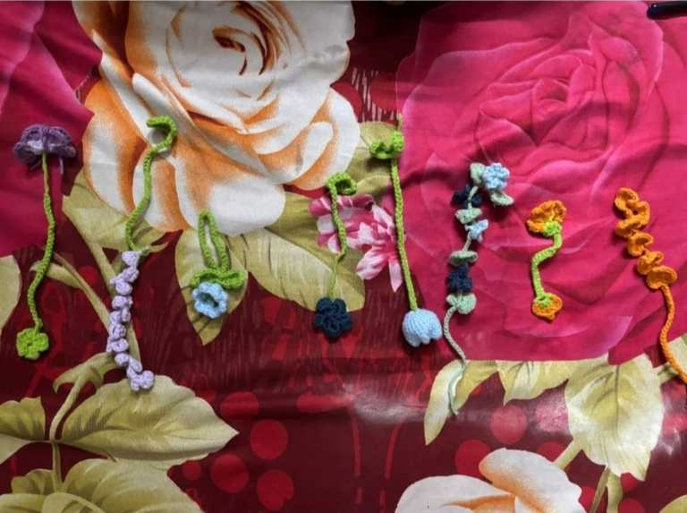
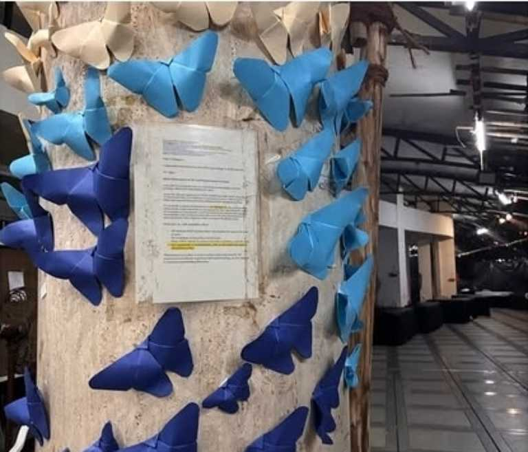
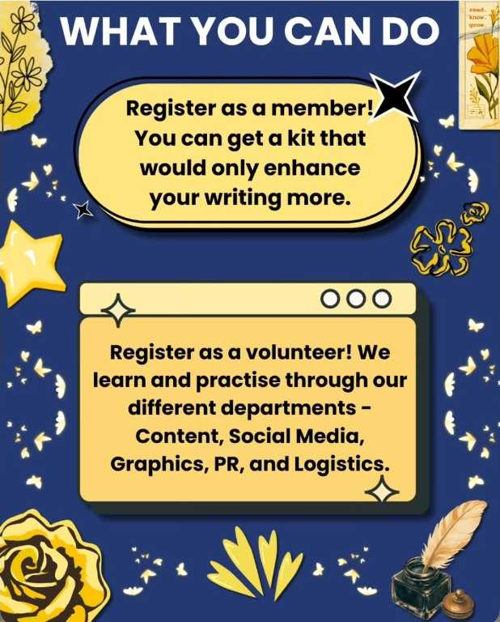
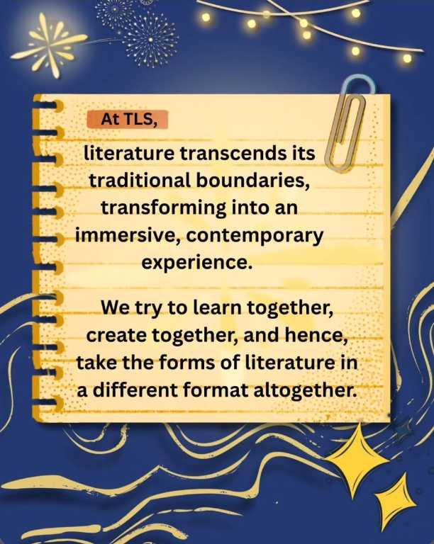
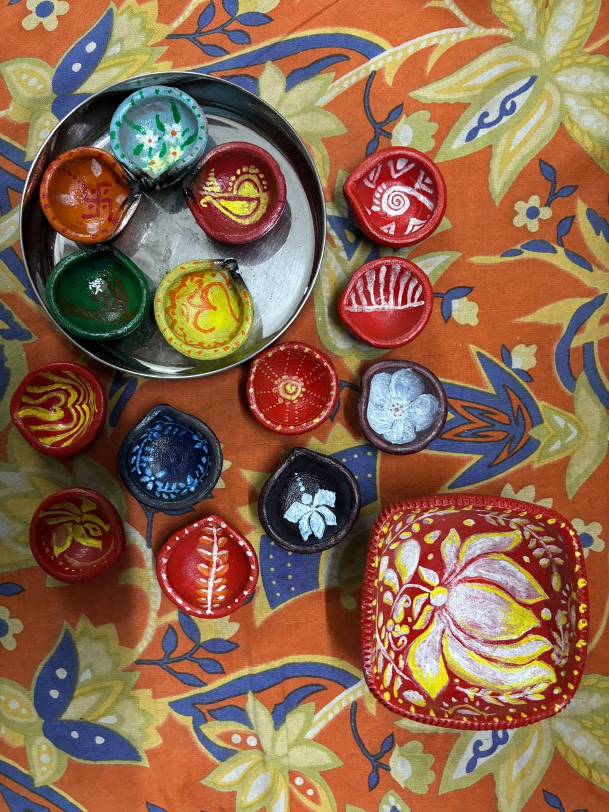

Literary Society graphics
Visual communication · Canva
Student · Creator · Collaborator
I'm a creative and empathetic individual who enjoys taking initiative, exploring ideas and using my abilities to make meaningful contributions.
Explore my work ↗

01 / A little about me
I'm pursuing a Bachelor of Commerce at Mithibai College and a BBA in Digital Business and Entrepreneurship at IIM Bangalore.
I enjoy bringing ideas to life, contributing to teams and finding thoughtful ways to connect creativity with meaningful work. My experiences span visual design, college events, handmade crafts and informal peer support.
Creative · Initiative-taking · Empathetic
02 / Selected work
Visual ideas, handmade details and collaborative creations.

Visual communication · Canva
Handmade · Organica Club
Paper craft · Fine Arts Department

Collaborative graphics · Canva

Typography · Visual storytelling

VIS Art Club · Community contribution
The Literary Society examples are selected society graphics from collaborative work; they are not all claimed as individually designed pieces. Add your diya photograph to the repository as hand-painted-diyas.jpg.
03 / Experience & involvement
Selected after a 15–20-day working evaluation and an interview.
Voluntary peer support; not professional counselling.
04 / Education
2026 – 2029
IIM Bangalore
2026 – 2029
Mithibai College
Academic highlights
91.2% overall
Business Studies 95/100 · English 94/100 · Accountancy 91/100
93.83% overall
Artificial Intelligence 99/100 · English 98/100 · Hindi 95/100 · Social Science 93/100
05 / Certifications & recognition
NPTEL · Score: 70%
IOF
IOF
Commerce Teachers' Foundation
Commerce Teachers' Foundation
ICAI
Hindi Vikas Sansthan, Delhi
Hindi Vikas Sansthan, Delhi
SHARP NGO · Creativity and Expression
06 / Printable resume
The PDF link opens the separate one-page resume file.
07 / Let's connect
Open to creative collaborations, student initiatives and leadership opportunities.